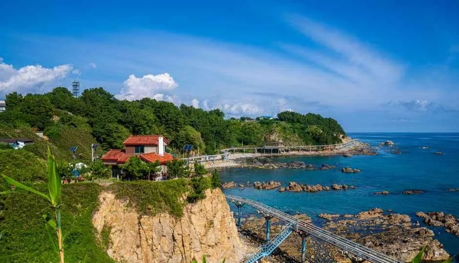
▲ 절벽 위 붉은 지붕 집과 해안 데크. 드라마 세트장 이미지 묶음에 포함된 장면이며 촬영 시기는 자료에 없다 ⓒ 한국관광공사 · 공공누리 제1유형
"죽변 스카이레일 타고 바다 위를 달리려는데, 지금도 운행하나? 안 타면 죽변에서 뭘 보지?" 이 글은 2026년 10월 19일 기준으로 울진군 공지, 한국관광공사 정보, 운영업체 안내 사이트를 대조해 죽변 해안에서 실제로 확인되는 것만 정리했다. 결론부터 말하면 스카이레일은 2026년 3월 28일부터 운행이 중단됐고, 이후 재개했다는 공식 소식은 확인하지 못했다. 울진군 운영 중단 공지 바로가기
스카이레일이 멈춰도 죽변이 비는 것은 아니다. 죽변항, 죽변등대, 대나무 숲길(용의 꿈길), 하트해변과 드라마 세트장이 차로 몇 분 거리에 모여 있어 걷고 멈추는 해안 코스는 그대로 가능하다. 다만 시설별 운영시간과 통제 여부는 자료마다 달라, 어디까지 확인했고 어디가 비어 있는지를 표로 나눠 적었다.
💡 먼저 결론
죽변해안스카이레일은 한국교통안전공단 정기검사(2026년 3월 23~27일) 부적합 판정으로 3월 28일부터 운행을 멈췄다. 울진군 공지(2026-04-02)에 재개 시점은 없고, 7월 초 보도도 재가동까지 시간이 걸릴 전망이라고 했으며 10월 19일까지 재개 보도는 찾지 못했다. 죽변등대와 드라마 세트장은 한국관광공사 정보상 09:00~18:00 연중무휴, 하트해변은 상시 개방으로 안내된다. 수컷 대게는 보도 기준 금어기(6월 1일~11월 30일)라 지금 시기의 먹거리는 다른 수산물 중심으로 잡아야 한다.
1. 가장 먼저 — 스카이레일은 지금 탈 수 있나
울진군은 4월 2일 올린 공지에서 이번 중단이 한국교통안전공단의 정기검사 결과에 따른 조치라고 밝혔다. 지적 사항으로는 2025년 10월 선로 화재 뒤 재발 방지 대책 미이행, 일부 차량의 제동거리·제동시간 기준 미달, 일부 전기설비의 절연저항 기준 미달, 설비 부식에 대한 전문기관 안전성 검증 권고가 적혀 있다. 군은 정기검사와 시설 성능점검 용역을 진행해 정상 운영을 목표로 한다고 했지만 날짜는 밝히지 않았다. 울진군 공지 원문 바로가기
혼란스러운 점은 운영업체(㈜스카이레일) 안내 사이트의 이용안내 페이지가 중단 공지 없이 예전 운영 정보를 그대로 싣고 있다는 것이다. 울진군 공지에 따르면 군과 업체의 위·수탁 계약은 2024년 10월 30일 종료됐고 소송이 진행 중이다(일부 언론은 계약 종료 시점을 2024년 8월 1일로 달리 보도했다). 2026년 7월 3일 대구고법은 군의 재계약 거부가 정당하다며 업체 항소를 기각했지만, 언론은 재가동에 소송 종결과 보수가 선행돼야 해 시간이 걸릴 것으로 전했다. 그래서 아래 표의 평시 정보는 "과거 운영 기준"으로만 읽고, 방문 전에는 반드시 전화로 확인해야 한다. 운영업체 이용안내 바로가기
| 항목 | 확인한 내용 | 근거 |
|---|---|---|
| 현재 운행 | 2026년 3월 28일부터 중단. 재개 소식은 확인하지 못함 | 뉴스핌(3월 30일: 3월 28일부터 중단)·울진군 공지(4월 2일)·경북일보(7월 5일) |
| 중단 사유 | 정기검사 부적합(선로 화재 대책 미이행·제동 성능·절연저항·부식) | 울진군 공지 |
| 중단 전 코스 | A코스만 운행. 죽변 승하차장~봉수항 왕복 2.8km, 약 40분. B코스(후정~봉수항 2.0km)는 운영예정 표기 | 운영업체 안내 |
| 중단 전 시간 | 평일 09:30~18:00, 주말·공휴일 09:00~18:00, 매표 마감 4~10월 17:30·11~3월 17:00, 휴무 매월 셋째 주 수요일 | 운영업체 안내(현재 유효 여부 미확인) |
| 중단 전 요금(차량당) | A코스 1·2인 21,000원, 3인 28,000원, 4인 35,000원 | 운영업체 안내(현재 유효 여부 미확인) |
| 문의 | 운영업체 054-783-8881, 울진군 문화관광과 054-789-5860~3 | 운영업체·울진군 |
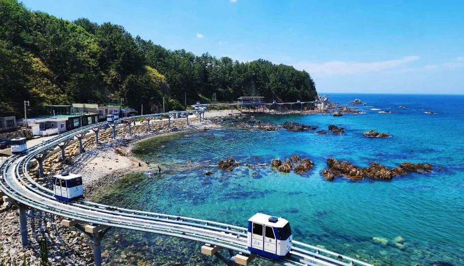
▲ 해안 곡선을 따라 궤도와 차량이 보이는 사진. 운행 당시 모습으로, 촬영 시기는 자료에 없다. 현재 운행은 중단 상태다. ⓒ 한국관광공사 · 공공누리 제1유형
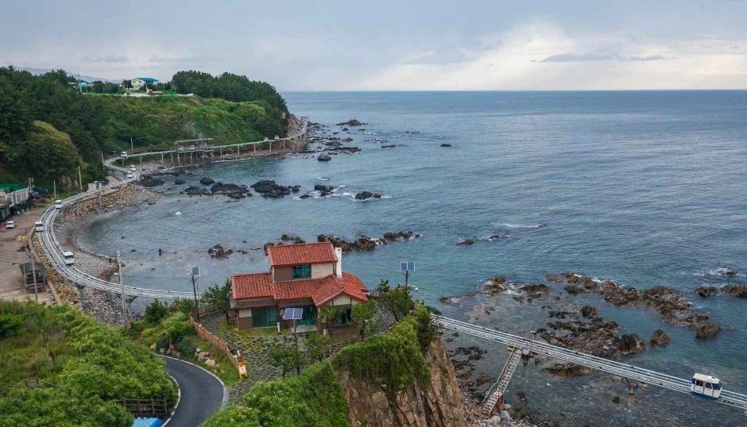
▲ 붉은 지붕 집 아래 해안 궤도가 이어진 장면. 촬영 시기는 자료에 없다. ⓒ 한국관광공사 · 공공누리 제1유형
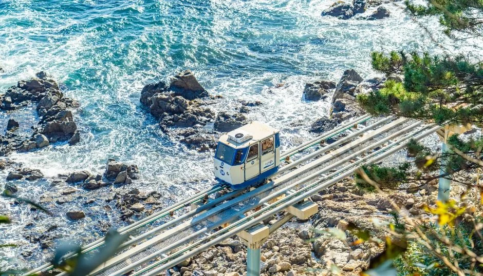
▲ 바위 해안 위의 궤도를 위에서 내려다본 장면. 촬영 시기는 자료에 없다. ⓒ 한국관광공사 · 공공누리 제1유형
일행이 많거나 아이가 있어 반드시 탑승이 목적이라면, 재개 공지가 확인되기 전까지 일정을 확정하지 않는 편이 안전하다. 반대로 걷기와 사진이 목적이라면 아래 시설은 스카이레일과 무관하게 이용할 수 있다.
2. 죽변 해안의 실제 구성 — 한눈에 보는 동선
한국관광공사가 죽변면 권역으로 등록한 주요 지점은 죽변항(죽변리), 죽변수산물시장(죽변중앙로 180), 죽변등대(등대길 52), 폭풍속으로 드라마세트장과 하트해변(둘 다 등대길 74-14)이다. 관광공사 좌표로 계산하면 죽변항과 죽변등대의 직선거리는 약 0.6km다. 이는 걷는 길의 거리가 아니라 지도상 직선이라 걷는 시간은 확인하지 못했다.
| 지점 | 주소 | 운영·개방 | 주차 |
|---|---|---|---|
| 죽변항 | 죽변면 죽변리 | 상시 개방, 연중무휴 | 가능 |
| 죽변수산물시장 | 죽변면 죽변중앙로 180 | 점포별로 상이 | 가능 |
| 죽변등대 | 죽변면 등대길 52 | 09:00~18:00, 연중무휴 | 가능 |
| 폭풍속으로 드라마세트장 | 죽변면 등대길 74-14 | 09:00~18:00, 연중무휴 | 가능 |
| 하트해변 | 죽변면 등대길 74-14 | 상시 개방, 연중무휴 | 정보 없음 |
| 죽변해안스카이레일 승하차장 | 죽변면 죽변중앙로 235-12 | 중단 중(위 1장 참고) | 1층 주차장(운영업체 안내) |
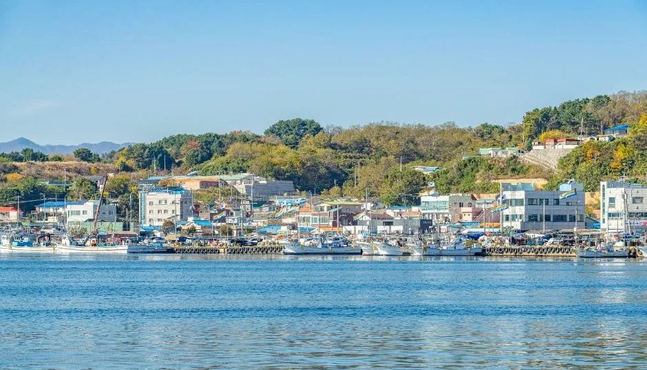
▲ 바다 건너에서 본 죽변항 일대. 촬영 시기는 자료에 없다. ⓒ 한국관광공사 · 공공누리 제1유형
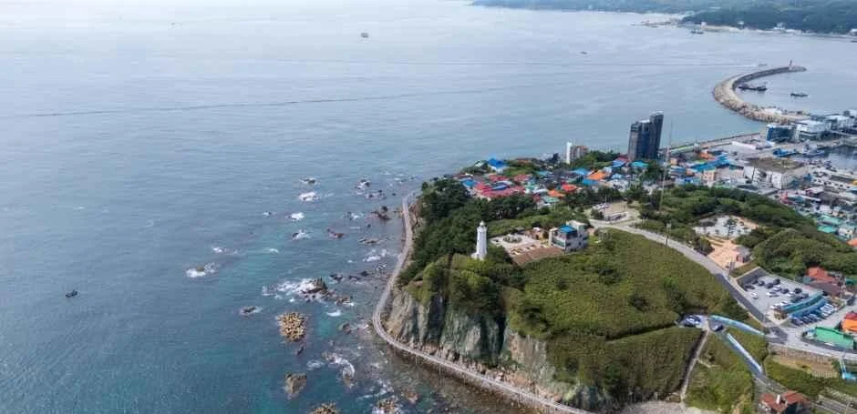
▲ 곶 위에 등대와 주택이 보이는 항공 사진. 죽변등대 이미지 묶음에 포함된 장면이며 촬영 시기는 자료에 없다. ⓒ 한국관광공사 · 공공누리 제1유형
동선은 항구에서 시작해 등대 쪽으로 올라가는 순서가 자연스럽다. 시장과 항구는 평지이고, 등대·대나무 숲길·하트해변은 등대길 쪽에 모여 있다. 지점 사이의 정확한 걷는 거리와 계단 난이도는 공식 자료에서 확인하지 못했다.
3. 죽변등대·용의 꿈길·하트해변 — 걷는 코스
죽변등대는 국가유산청 설명 기준으로 1910년 11월 울진 지역에서 처음 세워진 등대다. 평면 팔각형 콘크리트 4층 탑형 구조에 높이 15.6m이고, 1950년 6월 한국전쟁 중 폭격으로 기능을 잃었다가 1951년 10월 복구됐다. 이 설명은 관광공사 정보에 실린 것이다. 울진군 문화관광 소개 페이지는 약 16m 높이, 20초마다 깜빡이는 빛, 도달거리 약 35km, 2005년 경상북도 기념물 제154호 지정을 안내한다. 울진군 문화관광 죽변 안내 바로가기
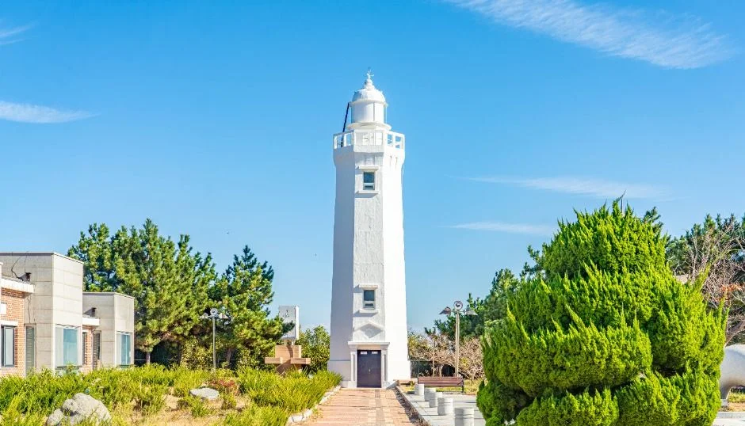
▲ 흰 등대 탑과 주변 정원. 촬영 시기는 자료에 없다. ⓒ 한국관광공사 · 공공누리 제1유형
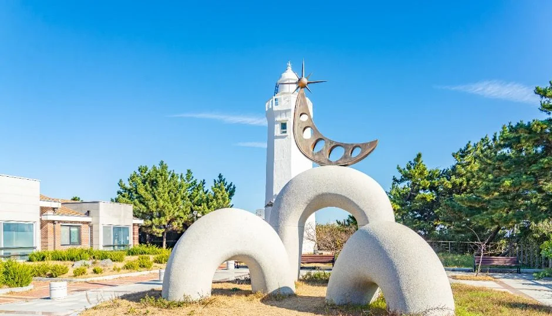
▲ 등대 앞 광장의 곡선형 조형물. 촬영 시기는 자료에 없다. ⓒ 한국관광공사 · 공공누리 제1유형
등대 옆으로는 대나무 숲길이 이어진다. 울진군 소개는 이 길을 '용의 꿈길'이라 부르며 해안 암초 사이에서 용이 승천했다는 이야기가 전해진다고 설명하고, "그리 길지 않다"고만 적었다. 정확한 길이와 소요 시간은 공식 자료에 없다. 관광공사가 소개하는 드라마 세트장에는 주인공의 집, 교회, 해안 데크 '용의 꿈길', 전망대가 있다고 한다.
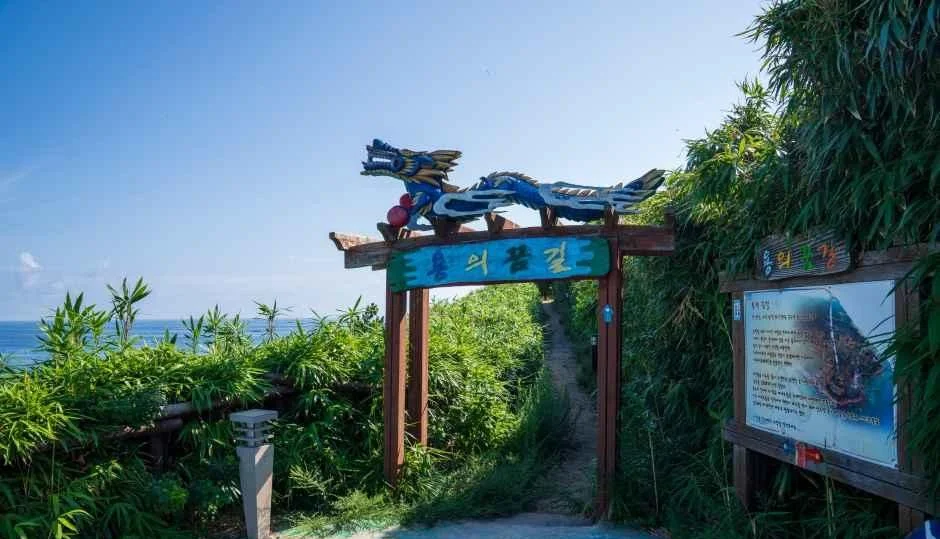
▲ 용 장식이 얹힌 입구 구조물과 안내판. 안내판 글자는 사진에서 읽히지 않는다. ⓒ 한국관광공사 · 공공누리 제1유형
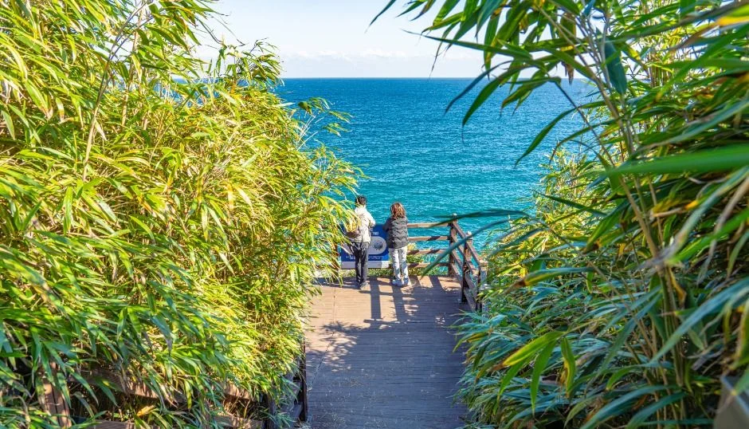
▲ 대나무 사이 데크 길에서 바다를 내려다보는 장면. 촬영 시기는 자료에 없다. ⓒ 한국관광공사 · 공공누리 제1유형
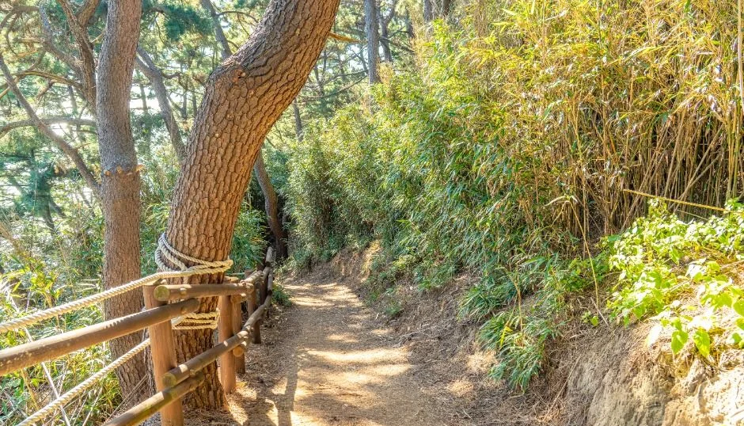
▲ 소나무와 대나무 사이의 흙길과 나무 난간. 촬영 시기는 자료에 없다. ⓒ 한국관광공사 · 공공누리 제1유형
하트해변은 드라마 세트장 '집' 뒤편 절벽 위에서 아래를 내려다보며 보는 방식이다. 하얗게 부서지는 파도가 반원의 띠를 그리는 모습이 하트 모양처럼 보인다는 것이 관광공사 설명이고, 드라마는 2004년 SBS 〈폭풍 속으로〉다. 해변 아래로 내려갈 수 있는지는 공식 자료에서 확인하지 못했다. 절벽 위에서 내려다보는 곳이라 난간 밖으로 나가지 않는 것이 기본이다.
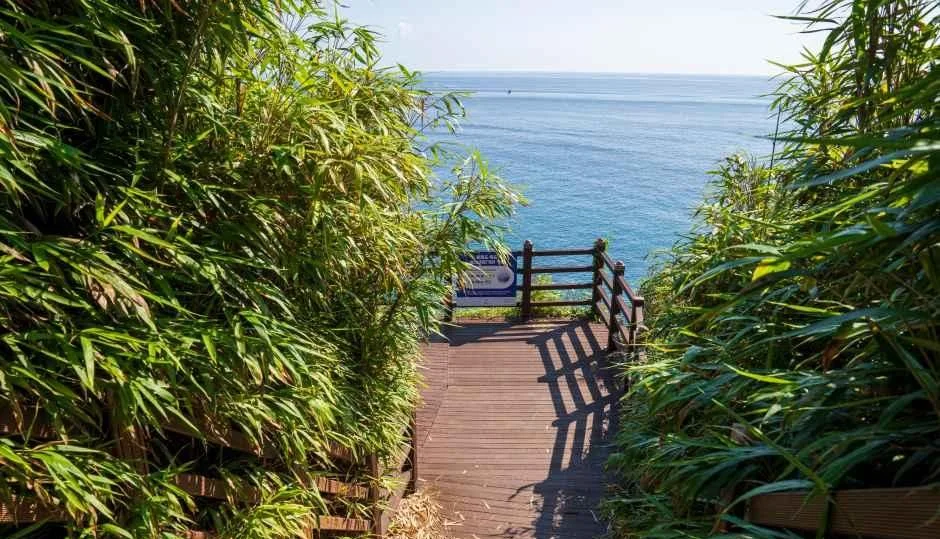
▲ 대나무 숲 사이 나무 데크와 바다. 촬영 시기는 자료에 없다. ⓒ 한국관광공사 · 공공누리 제1유형
✅ 운영시간 표기 주의
관광공사는 죽변등대와 세트장을 09:00~18:00으로 안내하지만, 울진군 문화관광 페이지의 등대길 76 항목(죽변 바다의 일출)에는 10:00~17:00으로 적혀 있다. 이 항목이 같은 시설인지는 확인하지 못했다. 늦은 오후나 이른 아침에 가려면 울진군 문화관광과 054-789-6893으로 먼저 확인하자.
4. 죽변항과 수산물시장 — 지금 시기엔 대게보다 이것
죽변항은 1995년 12월 29일 국가어항으로 지정됐고, 오징어·고등어·꽁치·도루묵·가자미 등이 많이 잡히며 대게잡이로도 유명하다고 관광공사가 소개한다. 죽변수산물시장은 건물 안에 있어 날씨와 관계없이 방문할 수 있고, 산 해산물을 사서 상점 안 식당에서 바로 맛볼 수 있다. 점포별 영업시간과 휴무는 다르고, 가격은 공식 자료가 없어 적지 않는다. 대한민국 구석구석 바로가기
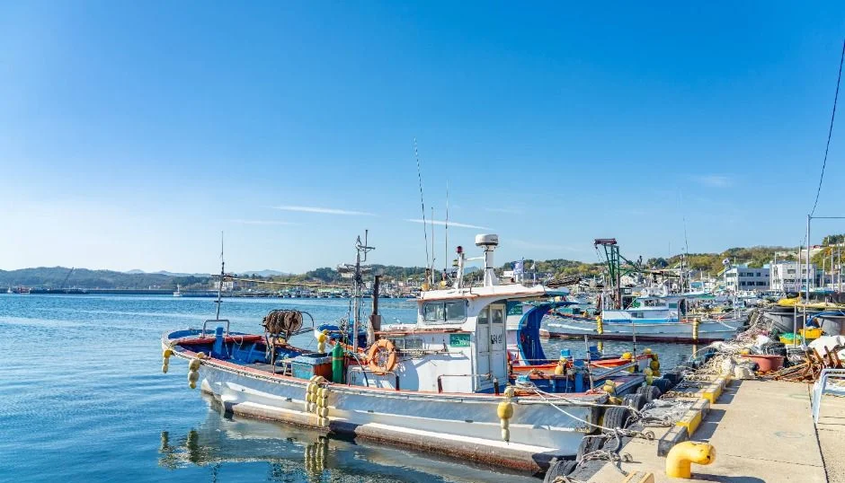
▲ 부두에 어선이 정박한 항구 풍경. 촬영 시기는 자료에 없다. ⓒ 한국관광공사 · 공공누리 제1유형
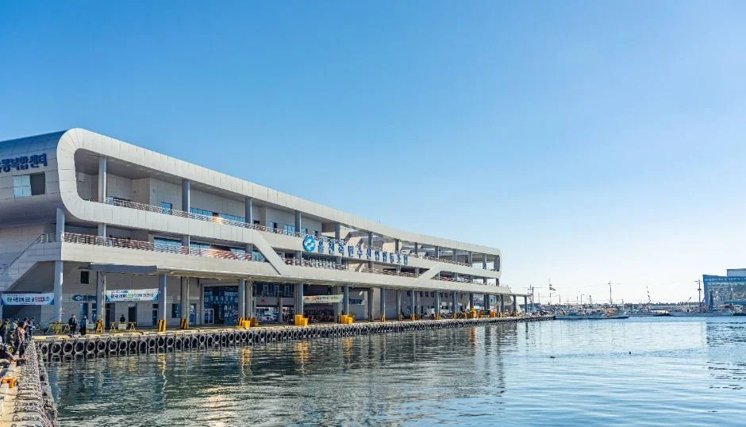
▲ 방파제 옆 흰색 곡선형 건물. 건물 용도는 사진 설명에 없다. ⓒ 한국관광공사 · 공공누리 제1유형
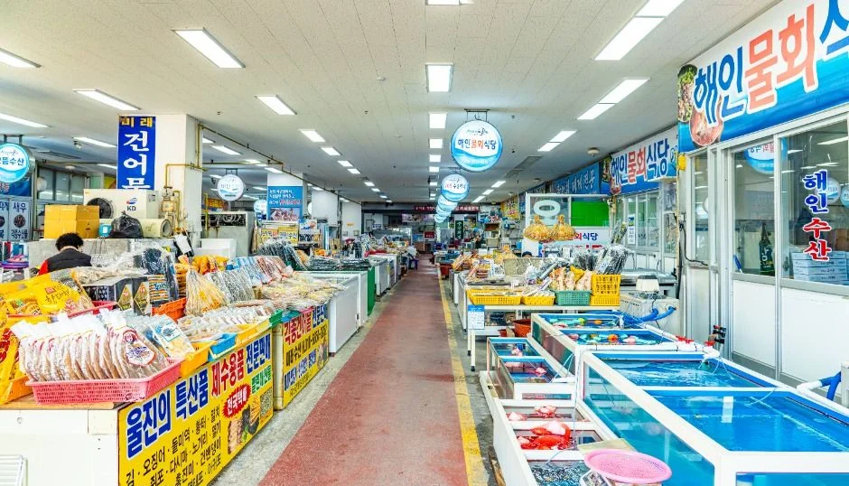
▲ 건물 안 수산물시장 통로. 촬영 시기는 자료에 없다. ⓒ 한국관광공사 · 공공누리 제1유형
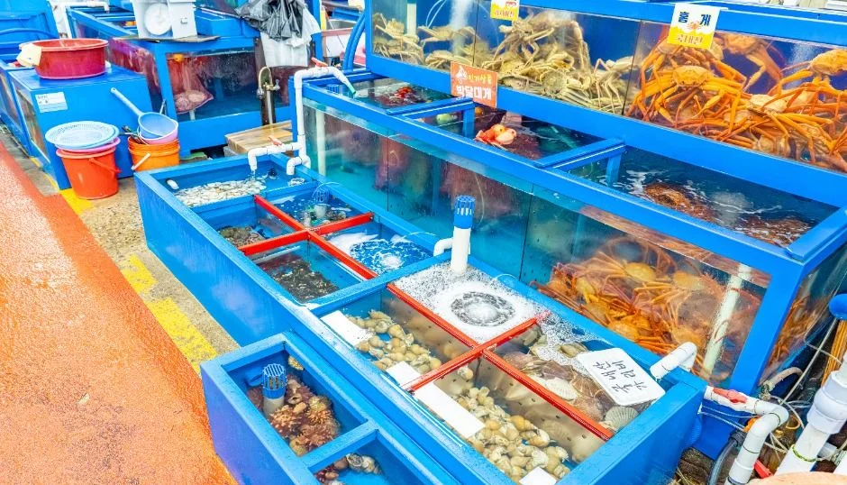
▲ 수조에 해산물이 담긴 시장 내부. 촬영 시기는 자료에 없다. ⓒ 한국관광공사 · 공공누리 제1유형
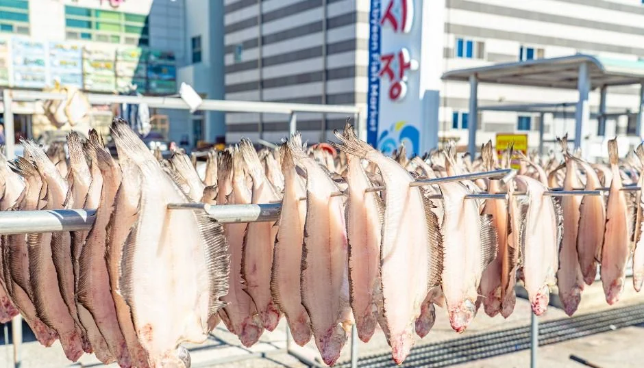
▲ 건조대에 걸린 생선. 어종은 사진 설명에 없다. ⓒ 한국관광공사 · 공공누리 제1유형
| 항목 | 확인한 내용 | 근거 |
|---|---|---|
| 대게(붉은대게 제외) 금지기간 | 일반 해역 6월 1일~11월 30일, 동경 131도30분 이동수역은 6월 1일~10월 31일, 강원 고성 일부 해역은 4월 1일~7월 20일·10월 1일~11월 30일(별도 해역). 별표 주5·주6의 경북 동해 두 해역(북위 36도26분~29분, 36도41분~44분, 동경 129도48분~51분)은 3월 1일~4월 30일에도 금지. 암컷 대게는 기간과 관계없이 포획 금지, 두흉갑장 9센티미터 이하도 금지 | 수산자원관리법 시행령 제6조·별표 1·별표 2(시행 2026-07-01, 국가법령정보센터 2026-10-23 열람) |
| 붉은대게(홍게) | 시행령 별표 1의 붉은대게 금지기간은 7월 10일~8월 25일(강원 연안자망어업만 6월 1일~7월 10일)이다. 스트레이트뉴스(2026-10-15)는 10월 13일 붉은대게 금어기가 풀렸다고 전하지만, 이 날짜는 별표 1에서 확인되지 않고 보도에도 법령·고시 근거가 없어 어업 종류별 휴어기 등 다른 규정일 수 있다. 해제일은 울진군·해경에 확인 필요 | 시행령 별표 1, 스트레이트뉴스(2026-10-15) |
| 죽변항 수산물축제 | 관광공사 소개는 매년 11월 개최. 2025년은 11월 7~9일. 2026년 일정은 확인하지 못함 | 한국관광공사·문의 054-789-5485~7 |
정정 안내(2026-10-23) 이 표의 대게 항목은 수산자원관리법 시행령 별표 1·2 원문을 국가법령정보센터에서 직접 확인해 다시 썼습니다. 이전 표에는 원문을 열람하지 못했다고 적었고, 붉은대게 금지기간(법령상 7월 10일~8월 25일)은 담지 못했습니다.
대게를 먹으러 간다면 11월 30일까지는 금어기라는 점을 알고 가야 한다. 다만 시장 안 식당에서 어떤 종을 어떤 경로로 내는지는 업소별로 다르고 공식 자료가 없어 판단하지 않는다. 축제 일정은 확정 공지 후 확인하자.
5. 주차·교통 — 차로 갈 때
관광공사 정보에는 죽변항·죽변수산물시장·죽변등대·드라마 세트장 모두 주차 '가능'으로만 적혀 있고, 주차면 수와 요금은 확인하지 못했다. 스카이레일 승하차장은 1층에 주차장이 있다고 운영업체가 안내하지만, 운행이 멈춘 상태에서 일반 주차가 가능한지는 공식 자료로 확인하지 못했다.
| 항목 | 확인한 내용 | 근거 |
|---|---|---|
| 승용차 이동 시간 | 동서울톨게이트에서 약 3시간 50분, 부산 남포항톨게이트에서 약 2시간 50분(스카이레일 승하차장 기준, 2022-08-13 수정 표기) | 운영업체 찾아오는 길 |
| 시외버스 | 동서울종합터미널·부산동부시외버스정류장에서 울진시외버스터미널을 거쳐 죽변우체국 하차 후 도보. 서울 약 3시간 50분, 부산 약 3시간 40분 | 운영업체 찾아오는 길 |
| 드라마 세트장·하트해변 | 울진시외버스터미널에서 죽변 방면 버스 | 한국관광공사 소개 |
| 시내버스 노선·배차 | 확인하지 못함 | - |
이동 시간은 2022년 표기분이라 현재 도로 상황과 다를 수 있으니 지도 앱 실시간 안내를 따르자. 같은 동해안을 이어 달리는 코스는 7번 국도 부산~고성 드라이브 기사와 삼척 새천년해안도로 기사에서 따로 정리했다.
6. 겨울 바람·통제 — 공식 기준은 어디까지
죽변등대·세트장·하트해변 구간이 절벽 위 데크와 해안 길로 이어진다는 점은 관광공사 소개에서 확인된다. 하지만 파도나 강풍 때 이 구간을 통제하는 공식 기준은 찾지 못했다. 이 글에서 기상 관련 수치를 적지 않은 이유다. 스카이레일의 경우 운영업체 안내만 "기상 상황에 따라 30분 정도 지연될 수 있다"고 적었고, 풍속 기준은 없다.
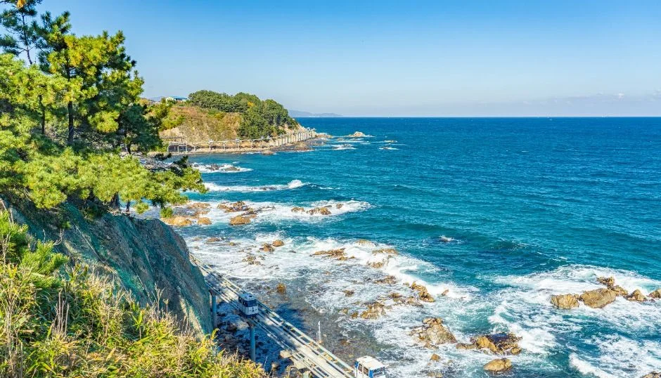
▲ 바위 해안에 파도가 부서지는 장면. 촬영 시기는 자료에 없다. ⓒ 한국관광공사 · 공공누리 제1유형
💡 공식 통제 정보가 아닌 일반 수칙
해안 데크와 절벽 가장자리는 파도·강풍·결빙 때 위험하므로, 난간 밖으로 나가지 않고 바람이 센 날에는 등대 앞 광장 등 평지 위주로 움직이는 편이 안전하다. 현장 안내판과 울진군 안내(054-789-6893)가 우선이다.
7. 반나절 코스와 인근 연계
스카이레일이 멈춘 상태를 전제로 짠 예시다. 이동 시간은 공식 수치가 없어 적지 않았고, 시설 운영시간은 위 표 기준이다.
| 순서 | 할 일 | 체크 |
|---|---|---|
| 오전 | 죽변항·수산물시장 둘러보기 | 점포별 영업시간 상이 |
| 09:00 이후 | 죽변등대·대나무 숲길 | 관광공사 기준 09:00~18:00 |
| 이어서 | 드라마 세트장·하트해변 전망 | 절벽 가장자리 주의 |
| 점심 | 시장 안 식당 또는 항구 주변 | 대게 금어기(11월 30일까지) 확인 |
| 선택 | 후정해수욕장·봉평신라비·국립해양과학관 | 운영시간은 각 기관 확인 |
선택지로 꼽은 곳은 모두 울진군·운영업체 자료에서 이름과 위치만 확인했다. 후정해수욕장(후정2길 67)은 죽변항 북쪽 도보 5분 거리로 소개되고, 봉평신라비(봉평리 521)는 국보 울진 봉평리 신라비이며, 국립해양과학관은 죽변면 해양과학길 8에 있다. 세 곳의 운영시간·요금은 확인하지 못했다. 내륙으로는 울진 금강소나무숲길·불영사 기사와 성류굴 기사를 이어 볼 수 있고, 남쪽으로 내려가는 해안 코스는 영덕 블루로드~호미곶 드라이브 기사가 있다.
✅ 출발 전 체크
1) 스카이레일은 2026년 3월 28일부터 중단, 재개는 울진군 문화관광과(054-789-5860~3) 또는 운영업체(054-783-8881)에 확인 2) 죽변등대·세트장 09:00~18:00(관광공사), 군 페이지의 10:00~17:00 표기는 별도 확인 3) 수컷 대게 금어기 11월 30일까지(보도 기준), 수산물축제 2026년 일정 미확인 4) 해안 데크 통제 기준은 공식 자료 없음, 현장 안내판 우선.
8. 정리
죽변해안스카이레일은 2026년 3월 28일부터 운행이 멈췄고 재개 소식은 확인되지 않지만, 죽변등대·드라마 세트장·하트해변·죽변항·수산물시장은 한국관광공사 기준으로 따로 걸을 수 있다. 등대와 세트장은 09:00~18:00, 하트해변은 상시 개방, 수컷 대게는 11월 30일까지 금어기다.
스카이레일 재개 시점, 지점 간 걷는 시간, 하트해변 접근 방식, 주차 요금, 해안 데크 통제 기준, 2026년 수산물축제 일정은 확인하지 못했다. 이 기사는 2026년 10월 19일 기준이므로 방문 전 울진군 054-789-6893 등에 확인하자.